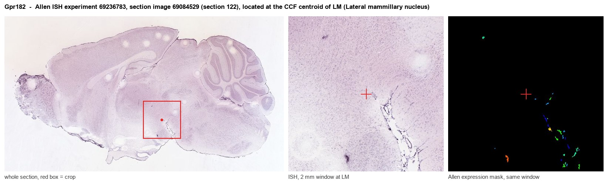
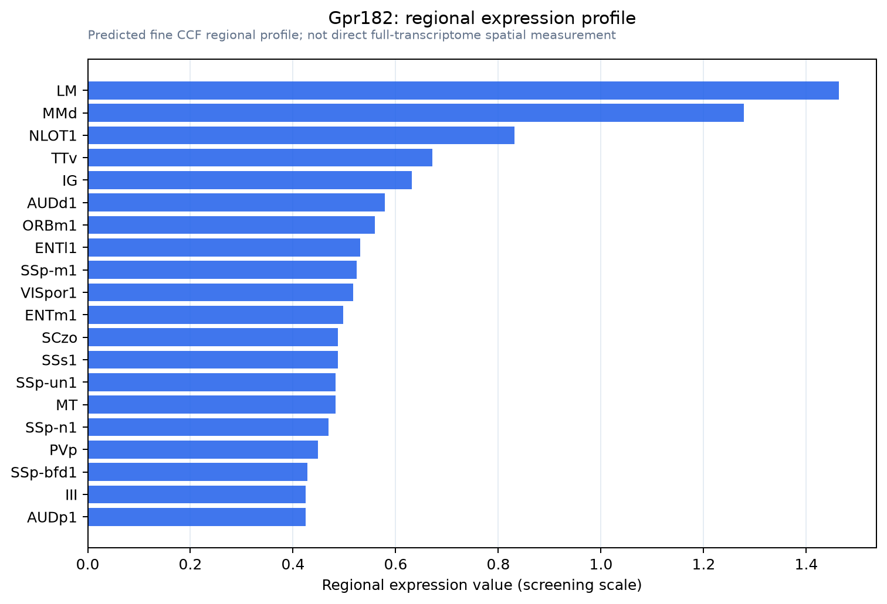

Gpr182
Atypical chemokine receptor 5 (G protein-coupled receptor 182) (G10D) (NOW)
Spatial tier: REGION_BIASED · Class: GPCR · Top region: LM (Lateral mammillary nucleus) · Positive regions: 30/554
44.5Discovery Score
39.3Targetability Score
CEvidence grade C
What this means: Gpr182: fine CCF profile is region-biased toward LM (top regions: LM, MMd, NLOT1, TTv, IG); this is a discovery lead, not direct proof.
Function in LM: evidence, prediction, innovation
- Gene function
- Gpr182 encodes a largely orphan, atypical G-protein-coupled receptor now classified as the atypical chemokine receptor ACKR5. Rather than signalling through G proteins, it constitutively internalises and degrades homeostatic chemokines including CXCL10, CXCL12 and CXCL13, acting as a scavenger that shapes chemokine gradients. It is expressed almost exclusively by endothelium, most strongly in sinusoidal and capillary beds.
- Region function
- The lateral mammillary nucleus is the hypothalamic hub of the head-direction circuit, projecting through the mammillothalamic tract to anterodorsal thalamus to generate and stabilise the heading signal used in navigation.
- Published in this region
- none No region-specific literature found. The closest evidence is that Gpr182 is an endothelium-restricted transcript whose whole-mouse localisation was mapped as an atypical chemokine receptor by Melgrati et al. 2023, that it defines liver sinusoidal endothelial specialisation (de Haan et al. 2020), and that it suppresses ERK-mediated proliferation in intestinal stem cells (Kechele et al. 2017).
- Predicted function
- Prediction: the lateral mammillary signal is vascular endothelial, not neuronal. The mammillary body is among the most densely capillarised brain regions, so an endothelium-restricted transcript scores high there largely because of vessel density. The predicted local function is chemokine scavenging at the capillary wall, limiting CXCL12-dependent leukocyte adhesion. Endothelial Gpr182 deletion should raise interstitial CXCL12 and increase immune-cell recruitment to mammillary vessels after inflammatory challenge, leaving head-direction tuning intact unless perfusion is compromised.
- Innovation
- ★★★★★ 5/5 Nobody has examined this receptor in the mammillary region, although the vascular origin of the signal makes the neuroscience novelty lower than the literature gap suggests.
- Tools
- Gpr182 knockout and reporter mice (Caron lab); no selective agonist or antagonist; anti-GPR182 antibodies validated in the atypical chemokine receptor atlas; endothelial targeting via Cdh5-CreERT2 or Tie2-Cre.
- References
Direct evidence located at the region

Allen ISH experiment 69236783, section image 69084529 (section 122): the section that contains the CCF centroid of Lateral mammillary nucleus according to the Allen image-to-atlas alignment (reference_to_image), with a 2 mm window around that point. Left: whole section, red box = window. Middle: ISH signal. Right: Allen's expression-mask view of the same window. open this image in the Allen viewer
Look it up yourself: Allen Mouse Brain ISH for Gpr182Allen reference atlas: LM (structure 210)ABC Atlas MERFISH viewer(in the ABC Atlas choose dataset MERFISH-C57BL6J-638850-CCF, colour cells by gene "Gpr182" or by parcellation_substructure "LM")All genes confined to LM + 3-D brain
Direct spatial evidence
MERFISH REGION LOCATOR

Regional expression figure

Predicted WMB × fine-CCF profile; not direct full-transcriptome spatial measurement.
Spatial profile
Evidence and specificity
- Evidence status
- PREDICTED_FINE
- Direct sources
- None; predicted localization only
- Exclusive threshold
- 12 positive regions out of 554
- Spatial specificity
- 0.311
- Top-region fraction
- 0.061
- Filter status
- PASS
Interpretation limits
- Cell-type-to-region projection is imputed expression, not direct spatial measurement.
- Adult reference atlases do not establish stability across age, sex, strain, state, or disease.
- Transcript abundance does not guarantee protein abundance or genetic-tool performance.